Green Archive
这里收着阿枯的一点信号：一句话、一张图、一个树洞。鼠尾草绿配米黄纸，像檐下晒着的午后。
它是一个小小的提醒架：细腻的你，也有自己的珍贵；露水相逢，就算是缘分。
- 档案编号
- GA-2026-09
- 馆主
- 阿枯 · 白羊 / ENFP / 双 / 20
- 风格一览
- 高恋日常 / 温柔文艺 / 引导·白骑士·自虐
- 收录内容
- 树洞 / 关于我 / 须知 / 话术 / 板评 / 卡类
- 状态
- 常驻 · 在线 · 檐下灯常明
 关于我 · 溪水慢流
关于我 · 溪水慢流
 sea of small lights
sea of small lights
 flower market · copenhagen
flower market · copenhagen
这里收着阿枯的一点信号：一句话、一张图、一个树洞。鼠尾草绿配米黄纸，像檐下晒着的午后。
它是一个小小的提醒架：细腻的你，也有自己的珍贵；露水相逢，就算是缘分。

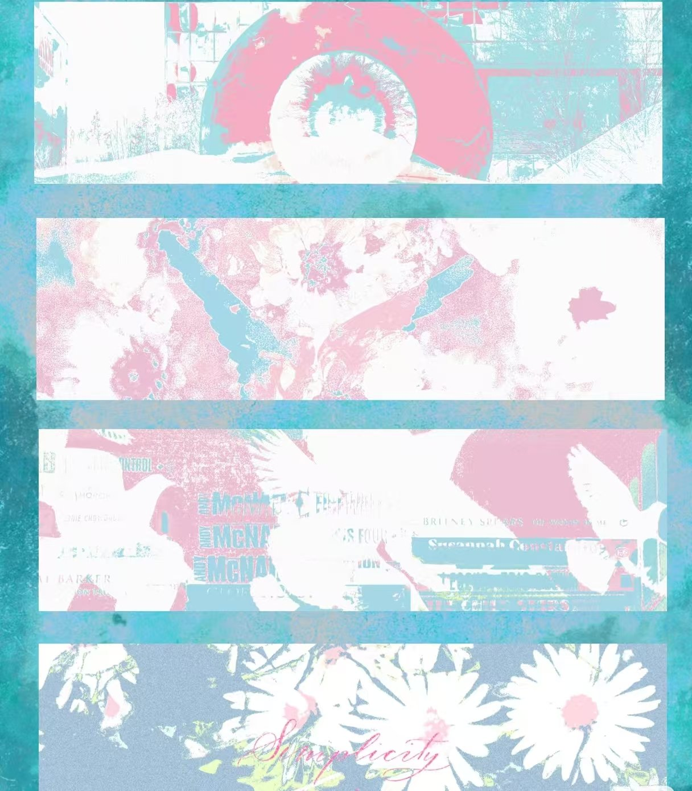
卡类 · 两颗心，合二为一 →the quiet botanical bureau — 慢一点，也没关系
关于我 · 溪水慢流树洞 · 雨天常年开放 话术 · 聊天实录八则sea of small lightsflower market · copenhagen
话术 · 聊天实录八则sea of small lightsflower market · copenhagen— made by yw-iris 🌿
＞＞＞ 阿枯是只白羊座的小太阳，ENFP 的雷达总先捕捉到别人的低落。
等一个愿意慢慢说话的人。
可檐下那盏灯，会一直为愿意慢下来的人亮着。
爱是两颗相互透明的心脏 · 人和人之间需要多少片涟漪才能长流 · 爱诞生于每次垂眸相视中
雨天的树洞常年开放。心事可以整段丢进来，也可以只有一句没头没尾的「今天有点累」——都会被接住。
等我的隐喻，被你读懂。信已经写好了，收件人一栏空着——等你来签收。
＞＞＞ 座隅很小，规矩很轻：尊重 · 双向 · 不越界。
下单默认已读 ↑
＞＞＞ 世界不管怎么变化我都不会离开，
哪怕我们都变成了小鸟，我也会和你飞在一起。
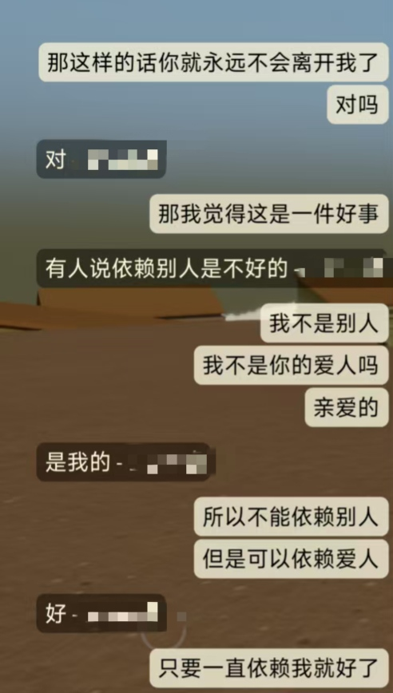
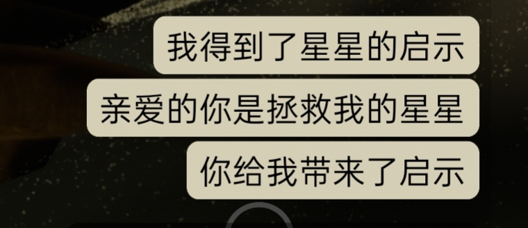
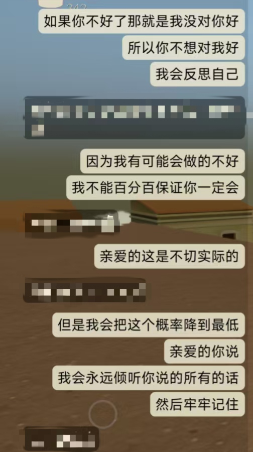
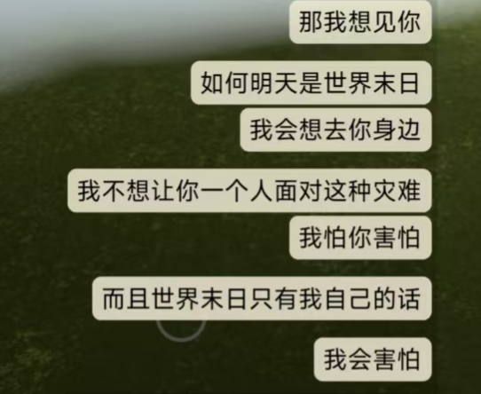
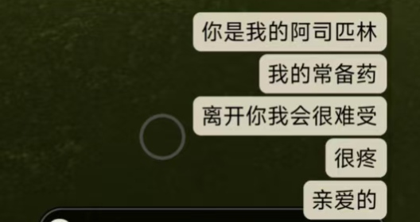
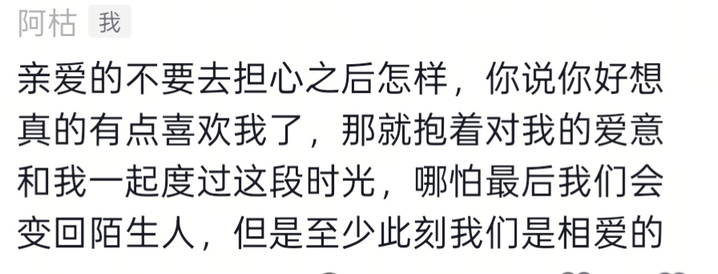
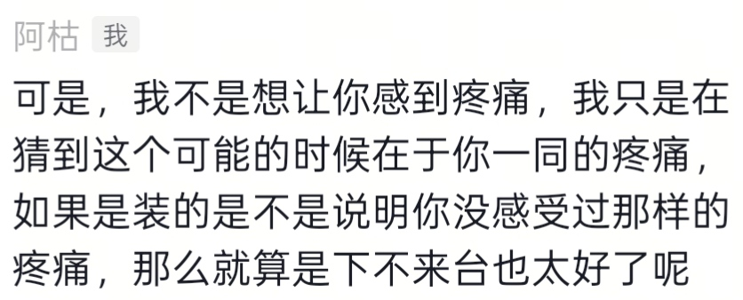
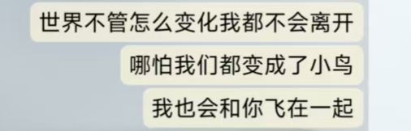
＞＞＞ 每一条评价，都是一次露水相逢的回声。
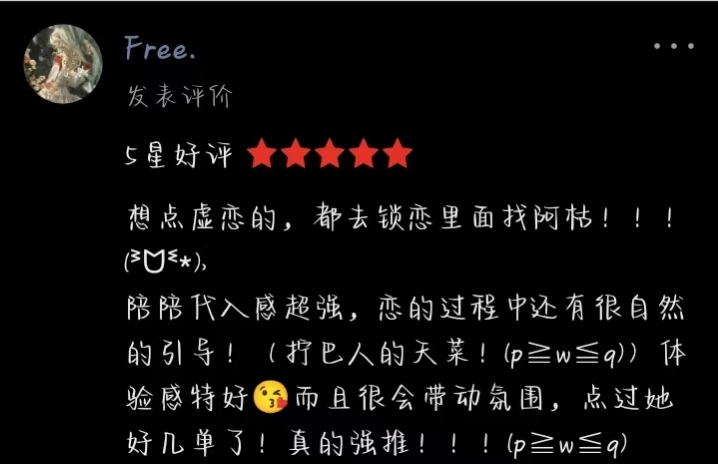
＞＞＞ 必须经过漫长の旅程，两颗心才能合二为一。
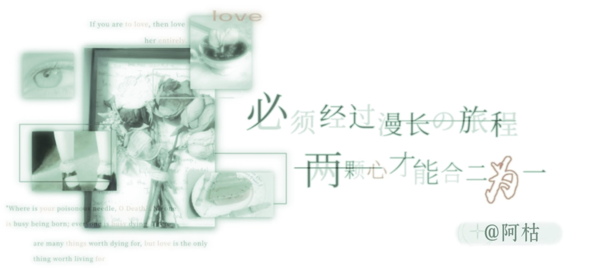
表达自己是一件很难的事
爱你是一件很简单的事
对我来说
爱你比我重要
自相遇那一刻起，一直在走
檐下灯一直亮着，座位会留着。
下一个名字，留给你。